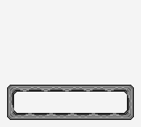

Isolierte Designvorschau · Welt 1
Abenteuerwald — Rahmen & HUD
Kombination der bestätigten Wald-HUD- und Zwischensequenz-Rahmen auf dem 160×144-Pixel-Raster. Die Quelldateien werden unverändert verwendet.


HUD-Quelleforest_hud_s1.svg · Grafik-Feature-Branch
Rahmen-Quelleforest_cutscene_s1.svg · Grafik-Feature-Branch